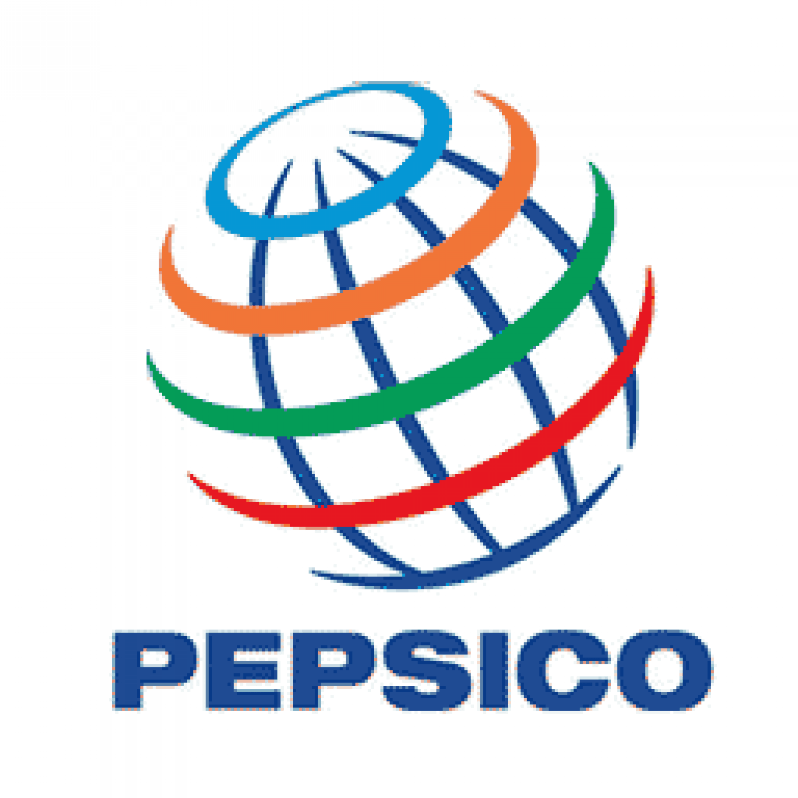
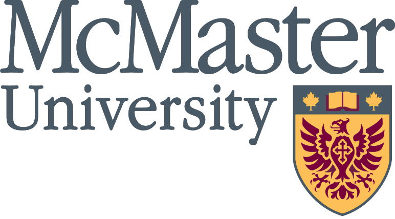
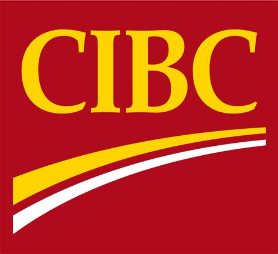

WORK EXPERIENCE
Consultant - Simplii Financial
Canadian Imperial Bank of Commerce, Toronto ON, January 2018-Present
- Leading project teams to deliver products end to end such as online Mutual Fund Applications, online sales ad spots, in-app messaging personalization, and account nicknaming
- Launched two-factor authentication capability as product consultant and business SME working collaboratively as part of a digital agile delivery pod with stakeholders across business groups
- Working closely with Simplii and Digital analytics teams to aggregate Voice of the Customer and market data to drive recommendations and monitor success of initiatives and products
- Setting the strategic roadmap and developing operational, communication, product, and client strategies for Simplii Financial in collaboration with internal Simplii division leaders
- Contracting and facilitating vendor assessments for future strategic partnerships
 Product Manager - Mobile Utility Capabilities
Product Manager - Mobile Utility Capabilities
TD Bank Financial Group, Toronto ON, September 2016-December 2017
- Led SDK discovery testing with vendor and internal development teams for integration feasibility
- Managed business casing cost modelling to secure project funding in collaboration with other direct channels teams, finance, and technology partners
- Collaborated with Legal, Vendor Management, and Product teams to draft work orders, statements of work, service level agreements, and master service agreements for external vendor solution engagements
- Created a dashboard to track app download, registration, usage, and engagement statistics for day 2 delivery roadmap prioritization
- Facilitated brainstorming sessions, market research proposals, and development of business cases for monetization of key digital assets with multiple internal stakeholders
 Supply Chain Analyst - Demand Planning
PepsiCo Beverages Canada, Mississauga ON, January 2016-April 2016
- Presented results of post-game analysis to see an across the board increase in KPI’s and influence purchase order and warehousing decision making
- Led meetings with key stakeholders including operations and department heads for franchise owned bottling operations to communicate outcomes of internal analyses
- Used advanced Excel skills including macros and VBA to make improvements to reporting tools for the department in addition to creating a custom post-game analytic tool for selling partners
Education
 Valedictorian, Master of Business Administration, Co-op, 2017
DeGroote School of Business, McMaster University, Burlington ON
- Minor in Management of Innovation and New Technology (MINT)
- President & Director of Academics, MBA Association
- GMAT Entrance Scholarship for achieving a score of 700, 2015
 Honours Bachelor of Knowledge Integration, 2014
Honours Bachelor of Knowledge Integration, 2014
University of Waterloo, Waterloo, ON
- Specialization in Collaborative Design
- Director of Innovation, Knowledge Integration Student Society, 2013
Volunteer Experience
 Digital Community Network
CIBC Digital & Direct, Toronto, ON
- Organizing events for CIBC Digital and Direct employees to give back to the community including: Meals on Wheels deliveries, Habitat for Humanity initiatives, and visiting with the Toronto Humane Society as pet volunteers
DeGroote Leader and Mentor
DeGroote Leadership Development Program, McMaster University, Burlington ON
- Provided ongoing personal and professional mentorship to students after the onboarding program to set them up for success in their academics and entry into the job market
- As an alumnus, organized Gold Sponsorship from CIBC, wrote the finals case, and led the executive judging panel for the 4th annual DeGroote Case Competition in November of 2018